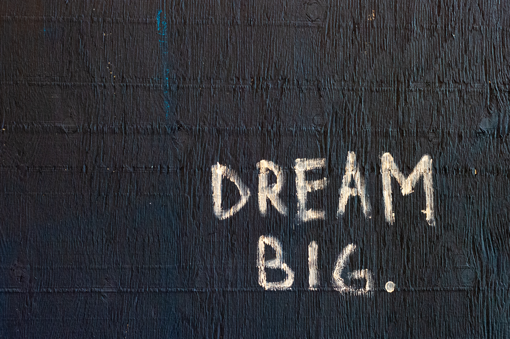

About

Welcome, this is the portfolio for Divyanshu Bhaik, you can also call me DV. My portfolio will help you take a quick look over my skill set and knowledge.
I am an Electronics and Communication Engineering Student, pursuing my integrated degree from National Institute of Technology, Hamirpur, Himachal Pradesh, India. I am
keenly interested in the field of Artificial Intelligence, Electronics, Computer Science, and Communication. Also, I have a good knowledge of Mathematics and Physics.
I strongly believe that to achieve Progress in any field of the life, there must be a Passion and Purpose to your cause, and without deviation from the norm, Progress is not Possible.
I love the concept of "Open-Source" and actively do work in order to support and promote the same culture, Do check some of my WORK.
Work
PROJECTS
INTERNSHIPS
ACADEMIC
Academic syllabus, research projects, technical and cultural activities during my time at NIT Hamirpur.
COURSES
Courses completed apart from my academic syllabus — AI, Electronics, Communication, and more.
BLOGS
My blogs represent my views on different topics and the way I prefer to perceive different situations.
Resume

DIVYANSHU BHAIK
Electronics and Communication Engineering
An enthusiastic and driven B. Tech. Student, currently pursuing my degree from National Institute of Technology, Hamirpur.
Actively seeking an Internship in Computer Vision, Deep Learning or Electronics and Communication to utilize and develop my knowledge of AI and
Electronics and Communication Engineering.
You can find me in CONTACT.
EDUCATION
B.Tech. + M.Tech. (Integrated)
National Institute Of Technology, Hamirpur
07/2017 - Present | CGPA - 8.77 | Electronics and Communication Engineering
TECHNICAL SKILLS
Programming Languages
Python
C
C++
Julia
Simulation Languages
System C
Verilog
VHDL
Simulation Software
MATLAB
Simulink
COMSOL Multiphysics
ModelSim
EDA Tanner
LabVIEW
Keil uVision5
CST Studio Suite
LT Spice
VS Code
Anaconda
Microprocessors & Microcontrollers
Intel 8085
Intel 8086
Intel 8051
Raspberry Pi
Arduino Uno
Intel Edison
Node-MCU
FPGA (Verilog)
Core Subjects
Analog Electronics
Digital Electronics
Analog Communication
Digital Communication
Data Structures
Neural Network & Fuzzy Logic
Digital Image & Signal Processing
AI & Machine Learning
Machine Learning
Deep Learning
Reinforcement Learning
Computer Vision
Data Science
NLP
Operating Systems
Windows
Ubuntu
Raspbian
Kali Linux
iOS
Android
PERSONAL PROJECTS
- Classification of Chest X-ray images into three classes: Normal, Pneumonia, and COVID-19 using Image Processing, Computer Vision, Deep Learning, and Machine Learning.
- Future work includes completion of the research paper, improvement of the pipeline performance parameters, and testing on more transfer learning models.
- A smart automated electronic device designed to predict the possibility of a car crashing into any other vehicle or object on the road, based on YOLO Algorithm, IOU, and Kalman Filter.
- Future developments include optimization for low-light conditions, improving prediction time, and practical deployment.
- A Deep Learning Character Recognition model using Tesseract OCR pipeline with image pre-processing for real-time Image/Video capture.
- Detected characters are saved as a Word document and transferred to Arduino via serial communication.
- Arduino converts the input into Braille format using servo motors to create a physical Braille pattern.
CERTIFICATES AND PROJECTS
You can find detail on all of my work in WORK
EXPERIENCE
- Innovation Head - IRIC
Research and Innovation Council | 09/2019 - Present | NIT Hamirpur
- Coordinator - VIBHAV
Technical Club of Department | 02/2018 - Present | NIT Hamirpur
- Joint Technical Secretary - ISTE
Indian Society for Technical Education | 09/2018 - Present | NIT Hamirpur
- Convener - Organization Club
Club responsible for organizing events in Institute | 09/2018 - Present | NIT Hamirpur
- Member - Rhythmeecz
Dance Club of Institute | 09/2017 - 08/2019 | NIT Hamirpur
SOFT SKILLS
- Event Management
- Leadership
- Organisation (Logistics)
- Punctuality
- Communication
- Critical Thinking
- Innovation
INTERESTS
- Sports (Playing) - Volleyball & Football
- Sketching
- Dancing
- Gym (Calisthenics)
- Travelling
You can Download a soft copy of my Resume from here
Contact